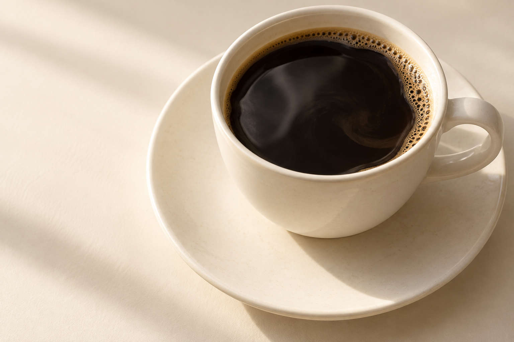

A LITTLE TIME, WELL SPENT.
Coffee forSlow Mornings
把一点时间，留给日常里的一杯。
For small pauses and unhurried days.
01 / THE EVERYDAY CUPAN INDEPENDENT VISUAL STUDY
可辨首屏是Coffee for Slow Mornings、奶油纸底和大幅杯影，区别于旧中文慢焙。照片独立生成，杯形/光影与字体/裁切拟合；所有导航、冲煮配方和保存为自编补写，无实际店铺、订单或作者生成链。